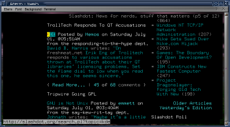

What is it
No, this is not a yet another collection of hyperlinks. Links is a text-mode web browser. It's main features are
- Background downloading.
- Immediate rendering.
- Menu/dialog interface.
- Mouse support.
- Visual HTML table and frame rendering.
- Inconvenient cursor control (if you tried w3m, you won't want to go back to lynx-style keys).
- There are some limit to a text-only browser
One feature of Links - independency - is both an advantage and a disadvantage. By independency I mean independency from OS features, other programs, and libraries. The advantage is that Links is easy to compile and use on different operating systems (Windows, OS/2, Unix). The disadvantage - Links does not use information from terminfo, mime.types, mailcap, and you have to configure it independently.
Here's my wishlist for Links:
- Better color support.
- CSS support.
- Persistent disk cache.
- Persistent history and different visited/unvisited hyperlink colors.
- Configuring key commands and interface colors.
Thanks to Open Source one can not only ask the author (what, by the way, I haven't done yet), but also (try to) implement one's wishes himself.
- links-0.91-mg.underline.1
This patch does two things:- Makes all hyperlinks (+ form controls/image maps/etc) underlined.
- Uses default color instead of black for background.
This is useful only for users of xterm (and clones). If this patch was made properly, it'd add options for the changes listed above. But it is not made properly. :) It's more a proof-of-concept type thing.

Slashdot in unpatched Links in an Eterm window.
Slashdot in patched Links in an Eterm window.

{kind=link}
When I find time, I'll try to rewrite this patch for current version of Links (now 0.95).
I was also planning to continue exploring Links' color handling code. I'd like to make it display proper background colors. First, Links should be able to use all 16 background colors. I don't know yet when I can find time for this.